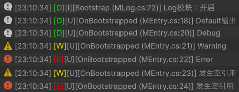

v1.0
概述
Log设计如下：
- 核心
- MLog(static)：核心静态类，基础设置以及日志都在该类中
- LogBase(ILog)：抽象基类，每个需要Log的类都需要创建一个LogBase派生类，最重要的
D()/W()/E()/EX()就在其中- InternalLog：框架内部使用
- UserLog：用户使用
- 其它
- ExLog：
EX()即异常输出所需的内容
- ExLog：
一些注意事项：
- 内部创建使用InternalLog，没有提供封装函数，使用
new Internal(nameof(xxx))即可
用户创建提供封装函数MLog.Create<T>()，一个类仅存在一个实例 - 默认Editor为Debug，打包后为Off，调用
MEntryBase.OverrideLogFilter()后可强制更改 EX()并不会像throw一样抛出异常，而是仅Log，本质上其实是D()/W()/E()的封装- Log模块的时序十分重要，非常容易发生错误，这里的方式是：
将MLog.Bootstrap()提前至MFrameworkCore.Bootstrap()之前(即在第一个生命周期事件OnBootstrapping事件之前)
// MEntryBase protected void Awake() { _core = (MCore)CreateCore(); // ... // 启动 MLog.SetDefaultLogFilter(SetLogFilter()); MLog.Bootstrap(); // 主动提前，使OnBootstrapping事件中可进行MLog操作 _core.Bootstrap(); } protected virtual MLog.LogFilter SetLogFilter() { return MLog.BUILD_FILTER; }
使用例
public class MEntry : MEntryBase
{
// 一个类仅有一个ILog(即使有2个也是同一对象)
private ILog _log = MLog.Create<MEntry>(MLog.LogFilter.Debug); // 可修改过滤等级
// 默认Editor为Debug，打包后为Off，调用后可强制更改
protected override MLog.LogFilter OverrideLogFilter()
{
return MLog.LogFilter.Debug;
}
protected override void OnBootstrapped(TrackerStoppedEvent e)
{
MLog.Default.D("Default输出"); // Default的LogFilter会跟着设置走
_log.D("Debug");
_log.W("Warning");
_log.E("Error");
_log.EX(LogException.NullReference);
_log.EX(LogException.NullReference, MLog.LogLevel.Error); // 修改报错等级
}
}
